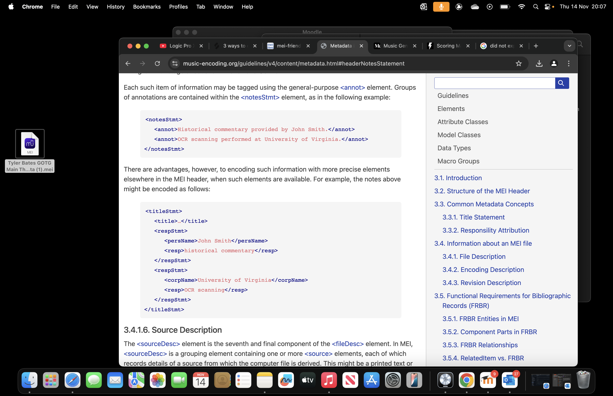
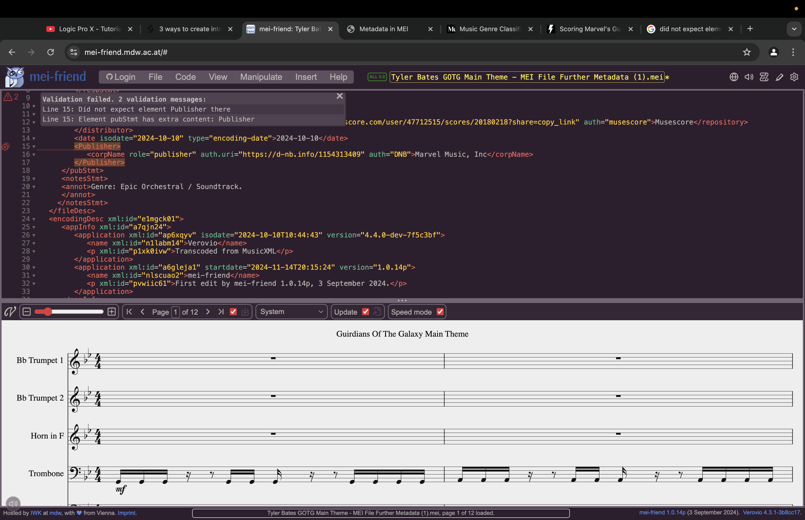

Music Analytic’s
The notesStmt element is the sixth component of the fileDesc element and is optional. If used, it contains one or more annot elements, each containing a single piece of descriptive information of the kind treated as ‘general notes’ in traditional bibliographic descriptions.
Had issue with publisher metadata, wasn’t expecting Publisher within the pubStmt element. I referred to the MEI guidlines and it stated that publisher was contained by pubStmt so I struggled to find the issue. However it was due to publisher having a Capital P rather than a lower case p, in which case it was allowed to be contained by pubStmt and not regarded as extra content.

Adding licensing data, availability as the parent element which is contained by pubStmt. Child element useRestrict contained within availability allows me to state the license applied to my score. I decide on the following license: Creative Commons Attribution-NonCommercial-NoDerivatives 4.0 International by using online tool: https://creativecommons.org/share-your-work/
Here is my final mei file with the metadata and data links correctly encoded.